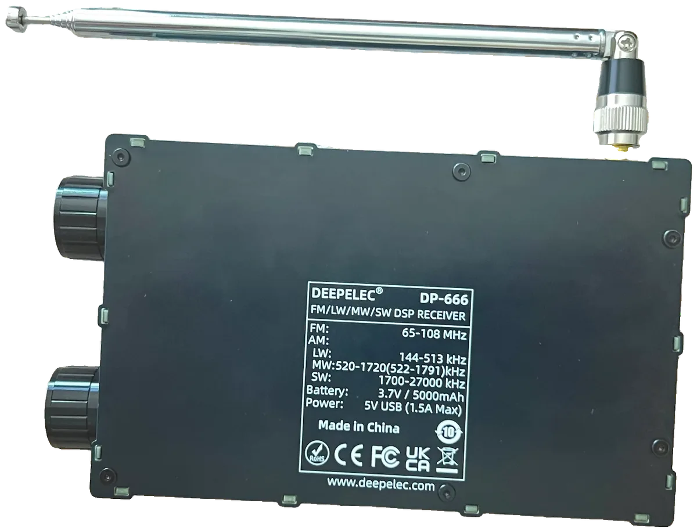
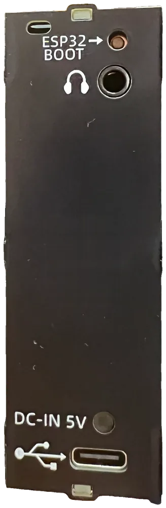
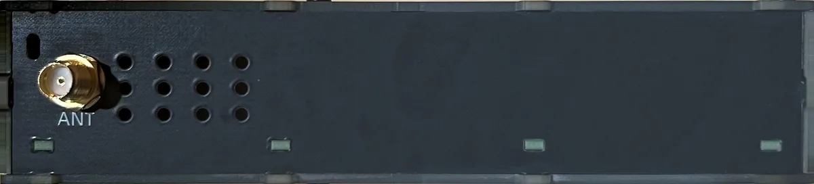
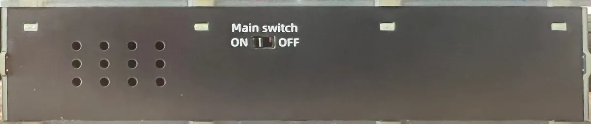

DP-666O rádio
Uso do rádio
Versão para leitura desta página. A busca, as ferramentas e o rádio virtual ficam no guia interativo.
Controles, sintonia, memórias e buscas no Megatron Mod17. Quando o comportamento vem do código do PE5PVB v2.00, base do Megatron, isso aparece como código-base. Para o firmware oficial, veja Uso da linha oficial.
Controles do rádio
Toque ou segure cada botão e knob para ver o que ele faz no seu firmware, em 3D ou na visualização simples.
Esta ferramenta funciona no guia interativo: abrir a ferramenta.
Onde fica cada coisa
Baixa cerca de 860 KB só quando você pede. Funciona no celular e no computador.






Fotos: mflipe, sob a licença CC BY 4.0.
| Lado | O que tem |
|---|---|
| Frente | tela de toque, teclado numérico (0 a 9, DX e Enter), BW, MODE, BAND, POWER e alto-falante |
| Lateral direita | de cima para baixo: TUNING, a roda SQL (+ em cima, − embaixo) e VOLUME |
| Lateral esquerda | de cima para baixo: BOOT (marcado ESP32 BOOT), fone de 3,5 mm, LED de carga e USB-C (marcada DC-IN 5V) |
| Topo | conector SMA da antena, marcado ANT, perto da lateral esquerda, e uma grade de doze furos ao lado dele |
| Verso | etiqueta com as faixas, a bateria e a alimentação |
| Fundo | chave geral, marcada Main switch: ON para o lado esquerdo, OFF para o direito; e uma grade de furos embaixo do alto-falante |
Teclado físico firmware
- 0 a 9: digitam a frequência. A faixa e a frequência ficam verdes enquanto você digita.
- Enter: confirma. Fora da digitação, age como o botão do knob.
- DX durante a digitação: apaga o último dígito; toque longo limpa tudo.
- DX: alterna entre digitar frequência e gravar memória.
- DX longo: inicia o DX scan, só na tela principal. Qualquer tecla cancela.
- 0 curto, fora da digitação: liga e desliga o mudo.
Tela e toque
- Áreas de toque: a metade esquerda da área de sinal abre os atalhos e a metade direita abre o menu. O volume se ajusta tocando nas metades da área de volume.
- Abrem o teclado na tela: a frequência, a barra de passo e o rótulo da faixa.
- Ícones tocáveis: MAN/AUTO/MEM, estéreo, mudo, RDS (abre a vista avançada), largura de banda (inclui AUTO BW), iMS, EQ, indicador de desvio, bateria e sono.
- Squelch pelo toque: toque em SQ (fica verde) e gire o knob. Requer Rotary adjust squelch ligado.
- Gestos extras firmware: tocar no canto superior esquerdo ativa a tela estática; toque longo no relógio sincroniza a hora; tocar em AUTO no SW ativa as bandas métricas; nas páginas RDS avançada e AF, tocar na metade inferior alterna entre elas.
- Cores firmware: sinal a partir de 60 fica vermelho, a partir de 40 verde e abaixo disso amarelo. A bateria ganha moldura vermelha em 3,3 V. Com Wi-Fi, o ícone mostra "wifi" no lugar da bateria.
- O que cada marca e mensagem quer dizer: veja Mensagens e códigos da tela, com um campo para digitar o que aparece no rádio.
Sintonia
- Passos: FM aceita 50, 100 ou 200 kHz. A barra acima da frequência mostra o passo ativo; toda apagada significa passo padrão. No código-base, o knob alterna entre passo padrão, 10 kHz, 100 kHz, 1 MHz e 10 MHz.
- AUTO: no código-base, a busca para em sinal com pouco ruído e pouco multipercurso, offset de até ±8 kHz e acima do squelch. Sensibilidade maior deixa a busca mais permissiva.
- Largura de banda em FM: AUTO, 56, 64, 72, 84, 97, 114, 133, 151, 168, 184, 200, 217, 236, 254, 287 e 311 kHz. Em AM: 3, 4, 6 e 8 kHz.
- iMS e EQ: supressão de multipercurso e equalização de canal do FM.
- Squelch (Use squelch): On, Off ou Auto. Em On código-base, no mínimo fica OFF e no máximo vira "ST", que só abre com sinal estéreo. Auto é um algoritmo próprio do Megatron. Para sinais fracos, use Off.
- Saída MPX: Audio output em MPX entrega o sinal multiplex bruto, para decodificadores externos. Não serve para ouvir.
Memórias
- Capacidade: 99 posições. Cada uma guarda faixa, frequência, largura de banda e estéreo/mono código-base. Há também nomes por frequência (My frequency name).
- Gravar: sintonize, aperte MODE até aparecer MEM, aperte o knob (MEM fica vermelho), escolha a posição e aperte de novo. Número vermelho indica posição ocupada; verde, livre.
- Chamar: em MEM, gire o knob.
- Apagar uma: no teclado da tela, use MEM/Delete no modo MEM, escolha a posição e confirme firmware. Teste antes numa posição sem importância.
- Arrange stations: "brokens" são buracos na lista. Only defrag fecha os buracos; Defrag and sort também ordena e remove duplicadas.
Delete stations apaga a faixa inteira
Delete stations não apaga uma memória só. Ele pergunta a faixa e esvazia todas as memórias dela. Auto search em Overwrite também sobrescreve tudo. Só um backup recupera.
- Band save mode firmware: guarda as memórias juntas (Mixed Save), por faixa (Save by band) ou por horário (Save by time segment).
Auto search (busca automática)
- Opções: modo de gravação, faixa, amostras e tempo de retenção, limite de multipercurso, sensibilidade (FM de 1 a 15, AM de 1 a 20), prioridade Quality ou Quantity, largura salva, mudo e tela apagada durante a busca, canal inicial e limites do SW.
- Modos de gravação: Overwrite, Append e Continuously append. O terceiro só aparece no firmware.
- "99 Free": "Free" mostra as posições disponíveis. Em Overwrite, as 99 contam como livres porque serão sobrescritas.
Para achar estações com menos chiado
- Faça o backup antes.
- Use Append, com o canal inicial depois da última memória.
- Use Quality priority e sensibilidade FM entre 3 e 5. No código-base, número menor é mais exigente.
- Use de 5 a 10 amostras e retenção de 100 a 200 ms.
- Deixe a tela apagada e o AF desligado durante a busca.
DX scan (Frequency scanning)
- Opções: faixa, canal inicial e final, espera, Exclude/Only, cancelamento por Signal, Off ou Correct PI, Stay/Break, mudo e tela apagada. O firmware acrescenta Wait on signal only e Hold time.
- Only código-base: percorre só as memórias ocupadas entre o canal inicial e o final.
- Exclude código-base: varre a faixa passo a passo, sem usar as memórias.
- Correct PI para quando decodifica o PI. Signal para quando encontra sinal limpo.
- O scan não grava nada. Qualquer tecla ou toque cancela.